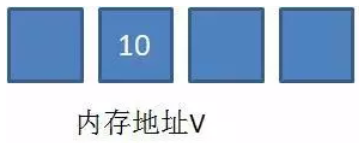
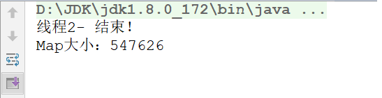
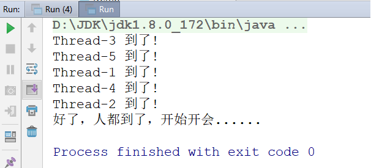

今日内容
- volatile关键字
- 原子性
- 并发包
- 正则表达式
- Lambda
- 方法引用
- Stream流
教学目标
- 能够说出volatile关键字的作用
- 能够说明volatile关键字和synchronized关键字的区别
- 能够理解原子类的工作机制
- 能够掌握原子类AtomicInteger的使用
- 能够描述ConcurrentHashMap类的作用
- 能够描述CountDownLatch类的作用
- 能够描述CyclicBarrier类的作用
- 能够表述Semaphore类的作用
- 能够描述Exchanger类的作用
- 能够掌握Lambda表达式的标准格式与省略格式
- 能够通过集合、映射或数组方式获取流
- 能够掌握常用的流操作
- 能够将流中的内容收集到集合和数组中
- 能够理解正则表达式的作用
- 能够使用正则表达式的字符类
- 能够使用正则表达式的逻辑运算符
- 能够使用正则表达式的预定义字符类
- 能够使用正则表达式的限定符
- 能够使用正则表达式的分组
- 能够在String的split方法中使用正则表达式
第一章 volatile关键字
1.1 看程序说结果
public class VolatileThread extends Thread {
// 定义成员变量
private boolean flag = false ;
public boolean isFlag() { return flag;}
@Override
public void run() {
try {
Thread.sleep(1000);
} catch (InterruptedException e) {
e.printStackTrace();
}
// 将flag的值更改为true
this.flag = true ;
System.out.println("flag=" + flag);
}
}
public class VolatileThreadDemo {// 测试类
public static void main(String[] args) {
// 创建VolatileThread线程对象
VolatileThread volatileThread = new VolatileThread() ;
volatileThread.start();
// main方法
while(true) {
if(volatileThread.isFlag()) {
System.out.println("执行了======");
}
}
}
}结果：

我们看到，VolatileThread线程中已经将flag设置为true，但main()方法中始终没有读到，从而没有打印。
1.2 JMM
概述：JMM(Java Memory Model)Java内存模型,是java虚拟机规范中所定义的一种内存模型。
Java内存模型(Java Memory Model)描述了Java程序中各种变量(线程共享变量)的访问规则，以及在JVM中将变量存储到内存和从内存中读取变量这样的底层细节。
所有的共享变量都存储于主内存。这里所说的变量指的是实例变量和类变量。不包含局部变量，因为局部变量是线程私有的，因此不存在竞争问题。每一个线程还存在自己的工作内存，线程
的工作内存，保留了被线程使用的变量的工作副本。线程对变量的所有的操作(读，取)都必须在工作内存中完成，而不能直接读写主内存中的变量，不同线程之间也不能直接访问
对方工作内存中的变量，线程间变量的值的传递需要通过主内存完成。

1.3 问题分析

VolatileThread线程从主内存读取到数据放入其对应的工作内存
将flag的值更改为true，但是这个时候flag的值还没有写会主内存
此时main方法读取到了flag的值为false
当VolatileThread线程将flag的值写回去后，但是main函数里面的while(true)调用的是系统比较底层的代码，速度快，快到没有时间再去读取主存中的值，
所以while(true)读取到的值一直是false。(如果有一个时刻main线程从主内存中读取到了主内存中flag的最新值，那么if语句就可以执行，main线程何时从主内存中读取最新的值，我们无法控制)
1.4 问题处理
加锁
// main方法
while(true) {
synchronized (volatileThread) {
if(volatileThread.isFlag()) {
System.out.println("执行了======");
}
}
}某一个线程进入synchronized代码块前后，执行过程入如下：
a.线程获得锁
b.清空工作内存
c.从主内存拷贝共享变量最新的值到工作内存成为副本
d.执行代码
e.将修改后的副本的值刷新回主内存中
f.线程释放锁
volatile关键字
使用volatile关键字：
private volatile boolean flag ;工作原理：

- VolatileThread线程从主内存读取到数据放入其对应的工作内存
- 将flag的值更改为true，但是这个时候flag的值还没有写会主内存
- 此时main方法main方法读取到了flag的值为false
- 当VolatileThread线程将flag的值写回去后，失效其他线程对此变量副本
- 再次对flag进行操作的时候线程会从主内存读取最新的值，放入到工作内存中
总结： volatile保证不同线程对共享变量操作的可见性，也就是说一个线程修改了volatile修饰的变量，当修改写回主内存时，另外一个线程立即看到最新的值。但是volatile不保证原子性。
volatile与synchronized
volatile只能修饰实例变量和类变量，而synchronized可以修饰方法，以及代码块。
volatile保证数据的可见性，但是不保证原子性(多线程进行写操作，不保证线程安全);而synchronized是一种排他（互斥）的机制
第二章 原子性
概述：所谓的原子性是指在一次操作或者多次操作中，要么所有的操作全部都得到了执行并且不会受到任何因素的干扰而中断，要么所有的操作都不执行。
2.1 看程序说结果
public class VolatileAtomicThread implements Runnable {
// 定义一个int类型的遍历
private int count = 0 ;
@Override
public void run() {
// 对该变量进行++操作，100次
for(int x = 0 ; x < 100 ; x++) {
count++ ;
System.out.println("count =========>>>> " + count);
}
}
}
public class VolatileAtomicThreadDemo {
public static void main(String[] args) {
// 创建VolatileAtomicThread对象
VolatileAtomicThread volatileAtomicThread = new VolatileAtomicThread() ;
// 开启100个线程对count进行++操作
for(int x = 0 ; x < 100 ; x++) {
new Thread(volatileAtomicThread).start();
}
}
}执行结果：不保证一定是10000
2.2 问题原理说明
以上问题主要是发生在count++操作上：
count++操作包含3个步骤：
- 从主内存中读取数据到工作内存
- 对工作内存中的数据进行++操作
- 将工作内存中的数据写回到主内存
count++操作不是一个原子性操作，也就是说在某一个时刻对某一个操作的执行，有可能被其他的线程打断。

1）假设此时x的值是100，线程A需要对改变量进行自增1的操作，首先它需要从主内存中读取变量x的值。由于CPU的切换关系，此时CPU的执行权被切换到了
B线程。A线程就处于就绪状态，B线程处于运行状态
2）线程B也需要从主内存中读取x变量的值,由于线程A没有对x值做任何修改因此此时B读取到的数据还是100
3）线程B工作内存中x执行了+1操作，但是未刷新之主内存中
4）此时CPU的执行权切换到了A线程上，由于此时线程B没有将工作内存中的数据刷新到主内存，因此A线程工作内存中的变量值还是100，没有失效。
A线程对工作内存中的数据进行了+1操作
5）线程B将101写入到主内存
6）线程A将101写入到主内存
虽然计算了2次，但是只对A进行了1次修改。
2.3 volatile原子性测试
代码测试
// 定义一个int类型的变量
private volatile int count = 0 ;小结：在多线程环境下，volatile关键字可以保证共享数据的可见性，但是并不能保证对数据操作的原子性（在多线程环境下volatile修饰的变量也是线程不安全的）。
在多线程环境下，要保证数据的安全性，我们还需要使用锁机制。
volatile的使用场景
开关控制
利用可见性特点，控制某一段代码执行或者关闭(比如今天课程的第一个案例)。
多个线程操作共享变量，但是是有一个线程对其进行写操作，其他的线程都是读
2.4 问题解决
使用锁机制
我们可以给count++操作添加锁，那么count++操作就是临界区的代码，临界区只能有一个线程去执行，所以count++就变成了原子操作。
public class VolatileAtomicThread implements Runnable {
// 定义一个int类型的变量
private volatile int count = 0 ;
private static final Object obj = new Object();
@Override
public void run() {
// 对该变量进行++操作，100次
for(int x = 0 ; x < 100 ; x++) {
synchronized (obj) {
count++ ;
System.out.println("count =========>>>> " + count);
}
}
}
}2.5 原子类
概述：java从JDK1.5开始提供了java.util.concurrent.atomic包(简称Atomic包)，这个包中的原子操作类提供了一种用法简单，性能高效，线程安全地更新一个变量的方式。
AtomicInteger
原子型Integer，可以实现原子更新操作
public AtomicInteger()： 初始化一个默认值为0的原子型Integer
public AtomicInteger(int initialValue)： 初始化一个指定值的原子型Integer
int get(): 获取值
int getAndIncrement(): 以原子方式将当前值加1，注意，这里返回的是自增前的值。
int incrementAndGet(): 以原子方式将当前值加1，注意，这里返回的是自增后的值。
int addAndGet(int data): 以原子方式将输入的数值与实例中的值（AtomicInteger里的value）相加，并返回结果。
int getAndSet(int value): 以原子方式设置为newValue的值，并返回旧值。演示基本使用。
案例改造
使用AtomicInteger对案例进行改造.
public class VolatileAtomicThread implements Runnable {
// 定义一个int类型的变量
private AtomicInteger atomicInteger = new AtomicInteger() ;
@Override
public void run() {
// 对该变量进行++操作，100次
for(int x = 0 ; x < 100 ; x++) {
int i = atomicInteger.getAndIncrement();
System.out.println("count =========>>>> " + i);
}
}
}2.6 原子类CAS机制实现线程安全
概述

CAS的全成是： Compare And Swap(比较再交换); 是现代CPU广泛支持的一种对内存中的共享数据进行操作的一种特殊指令。CAS可以将read-modify-check-write
转换为原子操作，这个原子操作直接由处理器保证。
CAS机制当中使用了3个基本操作数：内存地址V，旧的预期值A，要修改的新值B。
举例：
- 在内存地址V当中，存储着值为10的变量。

- 此时线程1想要把变量的值增加1。对线程1来说，旧的预期值A=10，要修改的新值B=11。

在线程1要提交更新之前，另一个线程2抢先一步，把内存地址V中的变量值率先更新成了11。

线程1开始提交更新，首先进行A和地址V的实际值比较（Compare），发现A不等于V的实际值，提交失败。

- 线程1重新获取内存地址V的当前值，并重新计算想要修改的新值。此时对线程1来说，A=11，B=12。这个重新尝试的过程被称为自旋。

- 这一次比较幸运，没有其他线程改变地址V的值。线程1进行Compare，发现A和地址V的实际值是相等的。

- 线程1进行SWAP，把地址V的值替换为B，也就是12。

CAS与Synchronized
CAS和Synchronized都可以保证多线程环境下共享数据的安全性。那么他们两者有什么区别？
Synchronized是从悲观的角度出发：
总是假设最坏的情况，每次去拿数据的时候都认为别人会修改，所以每次在拿数据的时候都会上锁，这样别人想拿这个数据就会阻塞直到它拿到锁
（共享资源每次只给一个线程使用，其它线程阻塞，用完后再把资源转让给其它线程）。因此Synchronized我们也将其称之为悲观锁。jdk中的ReentrantLock也是一种悲观锁。性能较差！！
CAS是从乐观的角度出发:
总是假设最好的情况，每次去拿数据的时候都认为别人不会修改，所以不会上锁，但是在更新的时候会判断一下在此期间别人有没有去更新这个数据。
CAS这种机制我们也可以将其称之为乐观锁。综合性能较好！
第三章 并发包
在JDK的并发包里提供了几个非常有用的并发容器和并发工具类。供我们在多线程开发中进行使用。
3.1 ConcurrentHashMap
为什么要使用ConcurrentHashMap：
- HashMap线程不安全，会导致数据错乱
- 使用线程安全的Hashtable效率低下
基于以上两个原因，便有了ConcurrentHashMap的登场机会。
- HashMap线程不安全演示。
公有、静态的集合：
public class Const {
public static HashMap<String,String> map = new HashMap<>();
}线程，向map中写入数据：
public void run() {
for (int i = 0; i < 500000; i++) {
Const.map.put(this.getName() + (i + 1), this.getName() + i + 1);
}
System.out.println(this.getName() + " 结束！");
}测试类：
public class Demo {
public static void main(String[] args) throws InterruptedException {
Thread1A a1 = new Thread1A();
Thread1A a2 = new Thread1A();
a1.setName("线程1-");
a2.setName("线程2-");
a1.start();
a2.start();
//休息10秒，确保两个线程执行完毕
Thread.sleep(1000 * 5);
//打印集合大小
System.out.println("Map大小：" + Const.map.size());
}
}说明：两个线程分别向同一个map中写入50000个键值对，最后map的size应为：100000，但多运行几次会发现有以下几种错误：
假死：

异常：

错误结果：

为了保证线程安全，可以使用Hashtable。注意：线程中加入了计时
公有、静态的集合：
public class Const { public static Hashtable<String,String> map = new Hashtable<>(); }线程，向map中写入数据：
public void run() { long start = System.currentTimeMillis(); for (int i = 0; i < 500000; i++) { Const.map.put(this.getName() + (i + 1), this.getName() + i + 1); } long end = System.currentTimeMillis(); System.out.println(this.getName() + " 结束！用时：" + (end - start) + " 毫秒"); }测试类：
public class Demo { public static void main(String[] args) throws InterruptedException { Thread1A a1 = new Thread1A(); Thread1A a2 = new Thread1A(); a1.setName("线程1-"); a2.setName("线程2-"); a1.start(); a2.start(); //休息10秒，确保两个线程执行完毕 Thread.sleep(1000 * 5); //打印集合大小 System.out.println("Map大小：" + Const.map.size()); } }执行结果：

可以看到，Hashtable保证的线程安全，时间是2秒多。
再看ConcurrentHashMap
公有、静态的集合：
public class Const { public static ConcurrentHashMap<String,String> map = new ConcurrentHashMap<>(); }线程，向map中写入数据：
public void run() { long start = System.currentTimeMillis(); for (int i = 0; i < 500000; i++) { Const.map.put(this.getName() + (i + 1), this.getName() + i + 1); } long end = System.currentTimeMillis(); System.out.println(this.getName() + " 结束！用时：" + (end - start) + " 毫秒"); }测试类：
public class Demo { public static void main(String[] args) throws InterruptedException { Thread1A a1 = new Thread1A(); Thread1A a2 = new Thread1A(); a1.setName("线程1-"); a2.setName("线程2-"); a1.start(); a2.start(); //休息10秒，确保两个线程执行完毕 Thread.sleep(1000 * 5); //打印集合大小 System.out.println("Map大小：" + Const.map.size()); } }执行结果：

ConcurrentHashMap仍能保证结果正确，而且提高了效率。
HashTable效率低下原因：
public synchronized V put(K key, V value)
public synchronized V get(Object key)HashTable容器使用synchronized来保证线程安全，但在线程竞争激烈的情况下HashTable的效率非常低下。因为当一个线程访问HashTable的同步方法，其他线程也访问HashTable的同步方法时，会进入阻塞状态。如线程1使用put进行元素添加，线程2不但不能使用put方法添加元素，也不能使用get方法来获取元素，所以竞争越激烈效率越低。

ConcurrentHashMap高效的原因：CAS + 局部(synchronized)锁定分段式锁

3.2 CountDownLatch
CountDownLatch允许一个或多个线程等待其他线程完成操作，再执行自己。
例如：线程1要执行打印：A和C，线程2要执行打印：B，但线程1在打印A后，要线程2打印B之后才能打印C，所以：线程1在打印A后，必须等待线程2打印完B之后才能继续执行。
CountDownLatch构造方法:
public CountDownLatch(int count)// 初始化一个指定计数器的CountDownLatch对象CountDownLatch重要方法:
public void await() throws InterruptedException// 让当前线程等待
public void countDown() // 计数器进行减1- 示例
1). 制作线程1：
public class ThreadA extends Thread {
private CountDownLatch down ;
public ThreadA(CountDownLatch down) {
this.down = down;
}
@Override
public void run() {
System.out.println("A");
try {
down.await();
} catch (InterruptedException e) {
e.printStackTrace();
}
System.out.println("C");
}
}2). 制作线程2：
public class ThreadB extends Thread {
private CountDownLatch down ;
public ThreadB(CountDownLatch down) {
this.down = down;
}
@Override
public void run() {
System.out.println("B");
down.countDown();
}
}3).制作测试类：
public class Demo {
public static void main(String[] args) {
CountDownLatch down = new CountDownLatch(1);//创建1个计数器
new ThreadA(down).start();
new ThreadB(down).start();
}
}4). 执行结果：
会保证按：A B C的顺序打印。
说明：
CountDownLatch中count down是倒数的意思，latch则是门闩的含义。整体含义可以理解为倒数的门栓，似乎有一点“三二一，芝麻开门”的感觉。
CountDownLatch是通过一个计数器来实现的，每当一个线程完成了自己的任务后，可以调用countDown()方法让计数器-1，当计数器到达0时，调用CountDownLatch。
await()方法的线程阻塞状态解除，继续执行。
3.3 CyclicBarrier
概述
CyclicBarrier的字面意思是可循环使用（Cyclic）的屏障（Barrier）。它要做的事情是，让一组线程到达一个屏障（也可以叫同步点）时被阻塞，直到最后一个线程到达屏障时，屏障才会开门，所有被屏障拦截的线程才会继续运行。
例如：公司召集5名员工开会，等5名员工都到了，会议开始。
我们创建5个员工线程，1个开会线程，几乎同时启动，使用CyclicBarrier保证5名员工线程全部执行后，再执行开会线程。
CyclicBarrier构造方法：
public CyclicBarrier(int parties, Runnable barrierAction)// 用于在线程到达屏障时，优先执行barrierAction，方便处理更复杂的业务场景CyclicBarrier重要方法：
public int await()// 每个线程调用await方法告诉CyclicBarrier我已经到达了屏障，然后当前线程被阻塞- 示例代码：
1). 制作员工线程：
public class PersonThread extends Thread {
private CyclicBarrier cbRef;
public PersonThread(CyclicBarrier cbRef) {
this.cbRef = cbRef;
}
@Override
public void run() {
try {
Thread.sleep((int) (Math.random() * 1000));
System.out.println(Thread.currentThread().getName() + " 到了! ");
cbRef.await();
} catch (InterruptedException e) {
e.printStackTrace();
} catch (BrokenBarrierException e) {
e.printStackTrace();
}
}
}2). 制作开会线程：
public class MeetingThread extends Thread {
@Override
public void run() {
System.out.println("好了，人都到了，开始开会......");
}
}3). 制作测试类：
public class Demo {
public static void main(String[] args) {
CyclicBarrier cbRef = new CyclicBarrier(5, new MeetingThread());//等待5个线程执行完毕，再执行MeetingThread
PersonThread p1 = new PersonThread(cbRef);
PersonThread p2 = new PersonThread(cbRef);
PersonThread p3 = new PersonThread(cbRef);
PersonThread p4 = new PersonThread(cbRef);
PersonThread p5 = new PersonThread(cbRef);
p1.start();
p2.start();
p3.start();
p4.start();
p5.start();
}
}4). 执行结果：

使用场景
使用场景：CyclicBarrier可以用于多线程计算数据，最后合并计算结果的场景。
需求：使用两个线程读取2个文件中的数据，当两个文件中的数据都读取完毕以后，进行数据的汇总操作。
3.4 Semaphore
Semaphore（发信号）的主要作用是控制线程的并发数量。
synchronized可以起到”锁”的作用，但某个时间段内，只能有一个线程允许执行。
Semaphore可以设置同时允许几个线程执行。
Semaphore字面意思是信号量的意思，它的作用是控制访问特定资源的线程数目。
Semaphore构造方法：
public Semaphore(int permits) permits 表示许可线程的数量
public Semaphore(int permits, boolean fair) fair 表示公平性，如果这个设为 true 的话，下次执行的线程会是等待最久的线程Semaphore重要方法：
public void acquire() throws InterruptedException 表示获取许可
public void release() release() 表示释放许可- 示例一：同时允许1个线程执行
1). 制作一个Service类：
public class Service {
private Semaphore semaphore = new Semaphore(1);//1表示许可的意思，表示最多允许1个线程执行acquire()和release()之间的内容
public void testMethod() {
try {
semaphore.acquire();
System.out.println(Thread.currentThread().getName()
+ " 进入 时间=" + System.currentTimeMillis());
Thread.sleep(1000);
System.out.println(Thread.currentThread().getName()
+ " 结束 时间=" + System.currentTimeMillis());
semaphore.release();
//acquire()和release()方法之间的代码为"同步代码"
} catch (InterruptedException e) {
e.printStackTrace();
}
}
}2). 制作线程类：
public class ThreadA extends Thread {
private Service service;
public ThreadA(Service service) {
super();
this.service = service;
}
@Override
public void run() {
service.testMethod();
}
}3). 测试类：
public class Demo {
public static void main(String[] args) {
Service service = new Service();
//启动5个线程
for (int i = 1; i <= 5; i++) {
ThreadA a = new ThreadA(service);
a.setName("线程 " + i);
a.start();//5个线程会同时执行Service的testMethod方法，而某个时间段只能有1个线程执行
}
}
}4). 结果：

- 示例二：同时允许2个线程同时执行
1). 修改Service类，将new Semaphore(1)改为2即可：
public class Service {
private Semaphore semaphore = new Semaphore(2);//2表示许可的意思，表示最多允许2个线程执行acquire()和release()之间的内容
public void testMethod() {
try {
semaphore.acquire();
System.out.println(Thread.currentThread().getName()
+ " 进入 时间=" + System.currentTimeMillis());
Thread.sleep(5000);
System.out.println(Thread.currentThread().getName()
+ " 结束 时间=" + System.currentTimeMillis());
semaphore.release();
//acquire()和release()方法之间的代码为"同步代码"
} catch (InterruptedException e) {
e.printStackTrace();
}
}
}2). 再次执行结果：

3.5 Exchanger
概述
Exchanger（交换者）是一个用于线程间协作的工具类。Exchanger用于进行线程间的数据交换。
这两个线程通过exchange方法交换数据，如果第一个线程先执行exchange()方法，它会一直等待第二个线程也执行exchange方法，当两个线程都到达同步点时，这两个线程就可以交换数据，将本线程生产出来的数据传递给对方。
Exchanger构造方法：
public Exchanger()Exchanger重要方法：
public V exchange(V x)- 示例一：exchange方法的阻塞特性
1).制作线程A，并能够接收一个Exchanger对象：
public class ThreadA extends Thread {
private Exchanger<String> exchanger;
public ThreadA(Exchanger<String> exchanger) {
super();
this.exchanger = exchanger;
}
@Override
public void run() {
try {
System.out.println("线程A欲传递值'礼物A'给线程B，并等待线程B的值...");
System.out.println("在线程A中得到线程B的值=" + exchanger.exchange("礼物A"));
} catch (InterruptedException e) {
e.printStackTrace();
}
}
}2). 制作main()方法：
public class Demo {
public static void main(String[] args) {
Exchanger<String> exchanger = new Exchanger<String>();
ThreadA a = new ThreadA(exchanger);
a.start();
}
}3).执行结果：

- 示例二：exchange方法执行交换
1).制作线程A：
public class ThreadA extends Thread {
private Exchanger<String> exchanger;
public ThreadA(Exchanger<String> exchanger) {
super();
this.exchanger = exchanger;
}
@Override
public void run() {
try {
System.out.println("线程A欲传递值'礼物A'给线程B，并等待线程B的值...");
System.out.println("在线程A中得到线程B的值=" + exchanger.exchange("礼物A"));
} catch (InterruptedException e) {
e.printStackTrace();
}
}
}2).制作线程B：
public class ThreadB extends Thread {
private Exchanger<String> exchanger;
public ThreadB(Exchanger<String> exchanger) {
super();
this.exchanger = exchanger;
}
@Override
public void run() {
try {
System.out.println("线程B欲传递值'礼物B'给线程A，并等待线程A的值...");
System.out.println("在线程B中得到线程A的值=" + exchanger.exchange("礼物B"));
} catch (InterruptedException e) {
e.printStackTrace();
}
}
}3).制作测试类：
public class Demo {
public static void main(String[] args) throws InterruptedException {
Exchanger<String> exchanger = new Exchanger<String>();
ThreadA a = new ThreadA(exchanger);
ThreadB b = new ThreadB(exchanger);
a.start();
b.start();
}
}4).执行结果：

- 示例三：exchange方法的超时
1).制作线程A：
public class ThreadA extends Thread {
private Exchanger<String> exchanger;
public ThreadA(Exchanger<String> exchanger) {
super();
this.exchanger = exchanger;
}
@Override
public void run() {
try {
System.out.println("线程A欲传递值'礼物A'给线程B，并等待线程B的值，只等5秒...");
System.out.println("在线程A中得到线程B的值 =" + exchanger.exchange("礼物A",5, TimeUnit.SECONDS));
System.out.println("线程A结束！");
} catch (InterruptedException e) {
e.printStackTrace();
} catch (TimeoutException e) {
System.out.println("5秒钟没等到线程B的值，线程A结束！");
}
}
}2).制作测试类：
public class Run {
public static void main(String[] args) {
Exchanger<String> exchanger = new Exchanger<String>();
ThreadA a = new ThreadA(exchanger);
a.start();
}
}3).测试结果：

使用场景
使用场景：可以做数据校对工作
需求：比如我们需要将纸制银行流水通过人工的方式录入成电子银行流水。为了避免错误，采用AB岗两人进行录入，录入到两个文件中，系统需要加载这两个文件，
并对两个文件数据进行校对，看看是否录入一致。
第四章 正则表达式
4.1 正则表达式的概念及演示
- 在Java中，我们经常需要验证一些字符串，例如：年龄必须是2位的数字、用户名必须是8位长度而且只能包含大小写字母、数字等。正则表达式就是用来验证各种字符串的规则。它内部描述了一些规则，我们可以验证用户输入的字符串是否匹配这个规则。
- 先看一个不使用正则表达式验证的例子：下面的程序让用户输入一个QQ号码，我们要验证：
- QQ号码必须是5–15位长度
- 而且必须全部是数字
- 而且首位不能为0
public class Demo {
public static void main(String[] args) {
Scanner sc = new Scanner(System.in);
System.out.println("请输入你的QQ号码：");
String qq = sc.next();
System.out.println(checkQQ(qq));
}
//我们自己编写代码，验证QQ号码
private static boolean checkQQ(String qq) {
//1.验证5--15位
if(qq.length() < 5 || qq.length() > 15){
return false;
}
//2.必须都是数字；
for(int i = 0;i < qq.length() ; i++){
char c = qq.charAt(i);
if(c < '0' || c > '9'){
return false;
}
}
//3.首位不能是0；
char c = qq.charAt(0);
if(c == '0'){
return false;
}
return true;//验证通过
}
}- 使用正则表达式验证：
public class Demo {
public static void main(String[] args) {
Scanner sc = new Scanner(System.in);
System.out.println("请输入你的QQ号码：");
String qq = sc.next();
System.out.println(checkQQ2(qq));
}
//使用正则表达式验证
private static boolean checkQQ2(String qq){
String regex = "[1-9]\\d{4,14}";//正则表达式
return qq.matches(regex);
}
}上面程序checkQQ2()方法中String类型的变量regex就存储了一个”正则表达式 “，而这个正则表达式就描述了我们需要的三个规则。matches()方法是String类的一个方法，用于接收一个正则表达式，并将”本对象”与参数”正则表达式”进行匹配，如果本对象符合正则表达式的规则，则返回true，否则返回false。
我们接下来就重点学习怎样写正则表达式
4.2 正则表达式-字符类
- 语法示例：
- [abc]：代表a或者b，或者c字符中的一个。
- [^abc]：代表除a,b,c以外的任何字符。
- [a-z]：代表a-z的所有小写字符中的一个。
- [A-Z]：代表A-Z的所有大写字符中的一个。
- [0-9]：代表0-9之间的某一个数字字符。
- [a-zA-Z0-9]：代表a-z或者A-Z或者0-9之间的任意一个字符。
- [a-dm-p]：a 到 d 或 m 到 p之间的任意一个字符。
- 代码示例：
public class Demo {
public static void main(String[] args) {
String str = "ead";
//1.验证str是否以h开头，以d结尾，中间是a,e,i,o,u中某个字符
String regex = "h[aeiou]d";
System.out.println("1." + str.matches(regex));
//2.验证str是否以h开头，以d结尾，中间不是a,e,i,o,u中的某个字符
regex = "h[^aeiou]d";
System.out.println("2." + str.matches(regex));
//3.验证str是否a-z的任何一个小写字符开头，后跟ad
regex = "[a-z]ad";
System.out.println("3." + str.matches(regex));
//4.验证str是否以a-d或者m-p之间某个字符开头，后跟ad
regex = "[[a-d][m-p]]ad";
System.out.println("4." + str.matches(regex));
}
}
4.3 正则表达式-逻辑运算符
- 语法示例：
- &&：并且
- | ：或者
- 代码示例：
public class Demo {
public static void main(String[] args) {
String str = "had";
//1.要求字符串是小写辅音字符开头，后跟ad
String regex = "[a-z&&[^aeiou]]ad";
System.out.println("1." + str.matches(regex));
//2.要求字符串是aeiou中的某个字符开头，后跟ad
regex = "[a|e|i|o|u]ad";//这种写法相当于：regex = "[aeiou]ad";
System.out.println("2." + str.matches(regex));
}
}
4.4 正则表达式-预定义字符
- 语法示例：
- “.” ： 匹配任何字符。
- “\d”：任何数字[0-9]的简写；
- “\D”：任何非数字[^0-9]的简写；
- “\s”： 空白字符：[ \t\n\x0B\f\r] 的简写
- “\S”： 非空白字符：[^\s] 的简写
- “\w”：单词字符：[a-zA-Z_0-9]的简写
- “\W”：非单词字符：[^\w]
- 代码示例：
public class Demo {
public static void main(String[] args) {
String str = "258";
//1.验证str是否3位数字
String regex = "\\d\\d\\d";
System.out.println("1." + str.matches(regex));
//2.验证手机号：1开头，第二位：3/5/8，剩下9位都是0-9的数字
str = "13513153355";//要验证的字符串
regex = "1[358]\\d\\d\\d\\d\\d\\d\\d\\d\\d";//正则表达式
System.out.println("2." + str.matches(regex));
//3.验证字符串是否以h开头，以d结尾，中间是任何字符
str = "had";//要验证的字符串
regex = "h.d";//正则表达式
System.out.println("3." + str.matches(regex));
//4.验证str是否是：had.
str = "had.";//要验证的字符串
regex = "had\\.";//\\.代表'.'符号，因为.在正则中被预定义为"任意字符"，不能直接使用
System.out.println("4." + str.matches(regex));
}
}4.5 正则表达式-数量词
- 语法示例：
- X? : 0次或1次
- X* : 0次到多次
- X+ : 1次或多次
- X{n} : 恰好n次
- X{n,} : 至少n次
- X{n,m}: n到m次(n和m都是包含的)
- 代码示例：
public class Demo {
public static void main(String[] args) {
String str = "";
//1.验证str是否是三位数字
str = "012";
String regex = "\\d{3}";
System.out.println("1." + str.matches(regex));
//2.验证str是否是多位数字
str = "88932054782342";
regex = "\\d+";
System.out.println("2." + str.matches(regex));
//3.验证str是否是手机号：
str = "13813183388";
regex = "1[358]\\d{9}";
System.out.println("3." + str.matches(regex));
//4.验证小数:必须出现小数点，但是只能出现1次
String s2 = "3.1";
regex = "\\d*\\.{1}\\d+";
System.out.println("4." + s2.matches(regex));
//5.验证小数：小数点可以不出现，也可以出现1次
regex = "\\d+\\.?\\d+";
System.out.println("5." + s2.matches(regex));
//6.验证小数：要求匹配：3、3.、3.14、+3.14、-3.
s2 = "-3.";
regex = "[+-]\\d+\\.?\\d*";
System.out.println("6." + s2.matches(regex));
//7.验证qq号码：1).5--15位；2).全部是数字;3).第一位不是0
s2 = "1695827736";
regex = "[1-9]\\d{4,14}";
System.out.println("7." + s2.matches(regex));
}
}
4.6 正则表达式-分组括号( )
public class Demo {
public static void main(String[] args) {
String str = "DG8FV-B9TKY-FRT9J-99899-XPQ4G";
//验证这个序列号：分为5组，每组之间使用-隔开，每组由5位A-Z或者0-9的字符组成
String regex = "([A-Z0-9]{5}-){4}[A-Z0-9]{5}";
System.out.println(str.matches(regex));
}
}
4.7 String的split方法中使用正则表达式
String类的split()方法原型：
public String[] split(String regex)//参数regex就是一个正则表达式。可以将当前字符串中匹配regex正则表达式的符号作为"分隔符"来切割字符串。代码示例：
public class Demo {
public static void main(String[] args) {
String str = "18 4 567 99 56";
String[] strArray = str.split(" +");
for (int i = 0; i < strArray.length; i++) {
System.out.println(strArray[i]);
}
}
}
4.8 String类的replaceAll方法中使用正则表达式
- String类的replaceAll()方法原型：
public String replaceAll(String regex,String newStr)//参数regex就是一个正则表达式。可以将当前字符串中匹配regex正则表达式的字符串替换为newStr。- 代码示例：
public class Demo {
public static void main(String[] args) {
//将下面字符串中的"数字"替换为"*"
String str = "jfdk432jfdk2jk24354j47jk5l31324";
System.out.println(str.replaceAll("\\d+", "*"));
}
}第五章 Lambda表达式
5.1 函数式编程思想概述

在数学中，函数就是有输入量、输出量的一套计算方案，也就是“拿什么东西做什么事情”。相对而言，面向对象过分强调“必须通过对象的形式来做事情”，而函数式思想则尽量忽略面向对象的复杂语法——强调做什么，而不是以什么形式做。
做什么，而不是怎么做
我们真的希望创建一个匿名内部类对象吗？不。我们只是为了做这件事情而不得不创建一个对象。我们真正希望做的事情是：将run方法体内的代码传递给Thread类知晓。
传递一段代码——这才是我们真正的目的。而创建对象只是受限于面向对象语法而不得不采取的一种手段方式。那，有没有更加简单的办法？如果我们将关注点从“怎么做”回归到“做什么”的本质上，就会发现只要能够更好地达到目的，过程与形式其实并不重要。
5.2 Lambda的优化
当需要启动一个线程去完成任务时，通常会通过java.lang.Runnable接口来定义任务内容，并使用java.lang.Thread类来启动该线程。
传统写法,代码如下：
public class Demo01ThreadNameless {
public static void main(String[] args) {
new Thread(new Runnable() {
@Override
public void run() {
System.out.println("多线程任务执行！");
}
}).start();
}
}本着“一切皆对象”的思想，这种做法是无可厚非的：首先创建一个Runnable接口的匿名内部类对象来指定任务内容，再将其交给一个线程来启动。
代码分析:
对于Runnable的匿名内部类用法，可以分析出几点内容：
Thread类需要Runnable接口作为参数，其中的抽象run方法是用来指定线程任务内容的核心；- 为了指定
run的方法体，不得不需要Runnable接口的实现类； - 为了省去定义一个
RunnableImpl实现类的麻烦，不得不使用匿名内部类； - 必须覆盖重写抽象
run方法，所以方法名称、方法参数、方法返回值不得不再写一遍，且不能写错； - 而实际上，似乎只有方法体才是关键所在。
.png)
Lambda表达式写法,代码如下：
借助Java 8的全新语法，上述Runnable接口的匿名内部类写法可以通过更简单的Lambda表达式达到等效：
public class Demo02LambdaRunnable {
public static void main(String[] args) {
new Thread(() -> System.out.println("多线程任务执行！")).start(); // 启动线程
}
}这段代码和刚才的执行效果是完全一样的，可以在1.8或更高的编译级别下通过。从代码的语义中可以看出：我们启动了一个线程，而线程任务的内容以一种更加简洁的形式被指定。
不再有“不得不创建接口对象”的束缚，不再有“抽象方法覆盖重写”的负担，就是这么简单！
5.3 Lambda的格式
标准格式:
Lambda省去面向对象的条条框框，格式由3个部分组成：
- 一些参数
- 一个箭头
- 一段代码
Lambda表达式的标准格式为：
(参数类型 参数名称) -> { 代码语句 }格式说明：
- 小括号内的语法与传统方法参数列表一致：无参数则留空；多个参数则用逗号分隔。
->是新引入的语法格式，代表指向动作。- 大括号内的语法与传统方法体要求基本一致。
匿名内部类与lambda对比:
new Thread(new Runnable() {
@Override
public void run() {
System.out.println("多线程任务执行！");
}
}).start();仔细分析该代码中，Runnable接口只有一个run方法的定义：
public abstract void run();
即制定了一种做事情的方案（其实就是一个方法）：
- 无参数：不需要任何条件即可执行该方案。
- 无返回值：该方案不产生任何结果。
- 代码块（方法体）：该方案的具体执行步骤。
同样的语义体现在Lambda语法中，要更加简单：
() -> System.out.println("多线程任务执行！")- 前面的一对小括号即
run方法的参数（无），代表不需要任何条件； - 中间的一个箭头代表将前面的参数传递给后面的代码；
- 后面的输出语句即业务逻辑代码。
参数和返回值:
下面举例演示java.util.Comparator<T>接口的使用场景代码，其中的抽象方法定义为：
public abstract int compare(T o1, T o2);
当需要对一个对象数组进行排序时，Arrays.sort方法需要一个Comparator接口实例来指定排序的规则。假设有一个Person类，含有String name和int age两个成员变量：
public class Person {
private String name;
private int age;
// 省略构造器、toString方法与Getter Setter
}传统写法
如果使用传统的代码对Person[]数组进行排序，写法如下：
public class Demo06Comparator {
public static void main(String[] args) {
// 本来年龄乱序的对象数组
Person[] array = { new Person("古力娜扎", 19), new Person("迪丽热巴", 18), new Person("马尔扎哈", 20) };
// 匿名内部类
Comparator<Person> comp = new Comparator<Person>() {
@Override
public int compare(Person o1, Person o2) {
return o1.getAge() - o2.getAge();
}
};
Arrays.sort(array, comp); // 第二个参数为排序规则，即Comparator接口实例
for (Person person : array) {
System.out.println(person);
}
}
}这种做法在面向对象的思想中，似乎也是“理所当然”的。其中Comparator接口的实例（使用了匿名内部类）代表了“按照年龄从小到大”的排序规则。
代码分析
下面我们来搞清楚上述代码真正要做什么事情。
- 为了排序，
Arrays.sort方法需要排序规则，即Comparator接口的实例，抽象方法compare是关键； - 为了指定
compare的方法体，不得不需要Comparator接口的实现类； - 为了省去定义一个
ComparatorImpl实现类的麻烦，不得不使用匿名内部类； - 必须覆盖重写抽象
compare方法，所以方法名称、方法参数、方法返回值不得不再写一遍，且不能写错； - 实际上，只有参数和方法体才是关键。
Lambda写法
public class Demo07ComparatorLambda {
public static void main(String[] args) {
Person[] array = {
new Person("古力娜扎", 19),
new Person("迪丽热巴", 18),
new Person("马尔扎哈", 20) };
Arrays.sort(array, (Person a, Person b) -> {
return a.getAge() - b.getAge();
});
for (Person person : array) {
System.out.println(person);
}
}
}省略格式:
省略规则
在Lambda标准格式的基础上，使用省略写法的规则为：
- 小括号内参数的类型可以省略；
- 如果小括号内有且仅有一个参，则小括号可以省略；
- 如果大括号内有且仅有一个语句，则无论是否有返回值，都可以省略大括号、return关键字及语句分号。
备注：掌握这些省略规则后，请对应地回顾本章开头的多线程案例。
可推导即可省略
Lambda强调的是“做什么”而不是“怎么做”，所以凡是可以根据上下文推导得知的信息，都可以省略。例如上例还可以使用Lambda的省略写法：
Runnable接口简化:
1. () -> System.out.println("多线程任务执行！")
Comparator接口简化:
2. Arrays.sort(array, (a, b) -> a.getAge() - b.getAge());5.4 Lambda的前提条件
Lambda的语法非常简洁，完全没有面向对象复杂的束缚。但是使用时有几个问题需要特别注意：
- 使用Lambda必须具有接口，且要求接口中有且仅有一个抽象方法。
无论是JDK内置的Runnable、Comparator接口还是自定义的接口，只有当接口中的抽象方法存在且唯一时，才可以使用Lambda。 - 使用Lambda必须具有上下文推断。
也就是方法的参数或局部变量类型必须为Lambda对应的接口类型，才能使用Lambda作为该接口的实例。
备注：有且仅有一个抽象方法的接口，称为“函数式接口”。
第六章 方法引用
6.1 方法引用概述
方法引用使得开发者可以直接引用现存的方法、Java类的构造方法或者实例对象。方法引用和Lambda表达式配合使用，使得java类的构造方法看起来紧凑而简洁，没有很多复杂的模板代码。
6.2 方法引用基本使用
方法引用使用一对冒号 :: 。
下面，我们在 Car 类中定义了 4 个方法作为例子来区分 Java 中 4 种不同方法的引用。
public static class Car {
public static Car create( final Supplier< Car > supplier ) {
return supplier.get();
}
public static void collide( final Car car ) {
System.out.println( "Collided " + car.toString() );
}
public void follow( final Car another ) {
System.out.println( "Following the " + another.toString() );
}
public void repair() {
System.out.println( "Repaired " + this.toString() );
}
}第一种方法引用的类型是构造器引用，语法是Class::new，或者更一般的形式：Class
final Car car = Car.create( Car::new );
final List<Car> cars = Arrays.asList(car);第二种方法引用的类型是静态方法引用，语法是Class::static_method。注意：这个方法接受一个Car类型的参数。
cars.forEach(Car::collide);第三种方法引用的类型是某个类的成员方法的引用，语法是Class::method，注意，这个方法没有定义入参：
cars.forEach(Car::repair);第四种方法引用的类型是某个实例对象的成员方法的引用，语法是instance::method。注意：这个方法接受一个Car类型的参数：
final Car police = Car.create(Car::new);
cars.forEach(police::follow);6.3 基于静态方法引用的代码演示
public static void main(String args[]) {
List names = new ArrayList();
names.add("大明");
names.add("二明");
names.add("小明");
names.forEach(System.out::println);
}上面的代码，我们将 System.out::println 方法作为静态方法来引用。
测试结果为：
大明
二明
小明第七章 Stream
在Java 8中，得益于Lambda所带来的函数式编程，引入了一个全新的Stream概念，用于解决已有集合类库既有的弊端。
7.1 引言
传统集合的多步遍历代码
几乎所有的集合（如Collection接口或Map接口等）都支持直接或间接的遍历操作。而当我们需要对集合中的元素进行操作的时候，除了必需的添加、删除、获取外，最典型的就是集合遍历。例如：
public class Demo01ForEach {
public static void main(String[] args) {
List<String> list = new ArrayList<>();
list.add("张无忌");
list.add("周芷若");
list.add("赵敏");
list.add("张强");
list.add("张三丰");
for (String name : list) {
System.out.println(name);
}
}
}这是一段非常简单的集合遍历操作：对集合中的每一个字符串都进行打印输出操作。
循环遍历的弊端
Java 8的Lambda让我们可以更加专注于做什么（What），而不是怎么做（How），这点此前已经结合内部类进行了对比说明。现在，我们仔细体会一下上例代码，可以发现：
- for循环的语法就是“怎么做”
- for循环的循环体才是“做什么”
为什么使用循环？因为要进行遍历。但循环是遍历的唯一方式吗？遍历是指每一个元素逐一进行处理，而并不是从第一个到最后一个顺次处理的循环。前者是目的，后者是方式。
试想一下，如果希望对集合中的元素进行筛选过滤：
- 将集合A根据条件一过滤为子集B；
- 然后再根据条件二过滤为子集C。
那怎么办？在Java 8之前的做法可能为：
public class Demo02NormalFilter {
public static void main(String[] args) {
List<String> list = new ArrayList<>();
list.add("张无忌");
list.add("周芷若");
list.add("赵敏");
list.add("张强");
list.add("张三丰");
List<String> zhangList = new ArrayList<>();
for (String name : list) {
if (name.startsWith("张")) {
zhangList.add(name);
}
}
List<String> shortList = new ArrayList<>();
for (String name : zhangList) {
if (name.length() == 3) {
shortList.add(name);
}
}
for (String name : shortList) {
System.out.println(name);
}
}
}这段代码中含有三个循环，每一个作用不同：
- 首先筛选所有姓张的人；
- 然后筛选名字有三个字的人；
- 最后进行对结果进行打印输出。
每当我们需要对集合中的元素进行操作的时候，总是需要进行循环、循环、再循环。这是理所当然的么？不是。循环是做事情的方式，而不是目的。另一方面，使用线性循环就意味着只能遍历一次。如果希望再次遍历，只能再使用另一个循环从头开始。
那，Lambda的衍生物Stream能给我们带来怎样更加优雅的写法呢？
Stream的更优写法
下面来看一下借助Java 8的Stream API，什么才叫优雅：
public class Demo03StreamFilter {
public static void main(String[] args) {
List<String> list = new ArrayList<>();
list.add("张无忌");
list.add("周芷若");
list.add("赵敏");
list.add("张强");
list.add("张三丰");
list.stream()
.filter(s -> s.startsWith("张"))
.filter(s -> s.length() == 3)
.forEach(System.out::println);
}
}直接阅读代码的字面意思即可完美展示无关逻辑方式的语义：获取流、过滤姓张、过滤长度为3、逐一打印。代码中并没有体现使用线性循环或是其他任何算法进行遍历，我们真正要做的事情内容被更好地体现在代码中。
7.2 流式思想概述
注意：请暂时忘记对传统IO流的固有印象！
整体来看，流式思想类似于工厂车间的“生产流水线”。

当需要对多个元素进行操作（特别是多步操作）的时候，考虑到性能及便利性，我们应该首先拼好一个“模型”步骤方案，然后再按照方案去执行它。
.png)
这张图中展示了过滤、映射、跳过、计数等多步操作，这是一种集合元素的处理方案，而方案就是一种“函数模型”。图中的每一个方框都是一个“流”，调用指定的方法，可以从一个流模型转换为另一个流模型。而最右侧的数字3是最终结果。
这里的filter、map、skip都是在对函数模型进行操作，集合元素并没有真正被处理。只有当终结方法count执行的时候，整个模型才会按照指定策略执行操作。而这得益于Lambda的延迟执行特性。
备注：“Stream流”其实是一个集合元素的函数模型，它并不是集合，也不是数据结构，其本身并不存储任何元素（或其地址值）。
7.3 获取流方式
java.util.stream.Stream<T>是Java 8新加入的最常用的流接口。（这并不是一个函数式接口。）
获取一个流非常简单，有以下几种常用的方式：
- 所有的
Collection集合都可以通过stream默认方法获取流； Stream接口的静态方法of可以获取数组对应的流。
方式1 : 根据Collection获取流
首先，java.util.Collection接口中加入了default方法stream用来获取流，所以其所有实现类均可获取流。
import java.util.*;
import java.util.stream.Stream;
public class Demo04GetStream {
public static void main(String[] args) {
List<String> list = new ArrayList<>();
// ...
Stream<String> stream1 = list.stream();
Set<String> set = new HashSet<>();
// ...
Stream<String> stream2 = set.stream();
Vector<String> vector = new Vector<>();
// ...
Stream<String> stream3 = vector.stream();
}
}方式2 : 根据Map获取流
java.util.Map接口不是Collection的子接口，且其K-V数据结构不符合流元素的单一特征，所以获取对应的流需要分key、value或entry等情况：
import java.util.HashMap;
import java.util.Map;
import java.util.stream.Stream;
public class Demo05GetStream {
public static void main(String[] args) {
Map<String, String> map = new HashMap<>();
// ...
Stream<String> keyStream = map.keySet().stream();
Stream<String> valueStream = map.values().stream();
Stream<Map.Entry<String, String>> entryStream = map.entrySet().stream();
}
}方式3 : 根据数组获取流
如果使用的不是集合或映射而是数组，由于数组对象不可能添加默认方法，所以Stream接口中提供了静态方法of，使用很简单：
import java.util.stream.Stream;
public class Demo06GetStream {
public static void main(String[] args) {
String[] array = { "张无忌", "张翠山", "张三丰", "张一元" };
Stream<String> stream = Stream.of(array);
}
}备注：
of方法的参数其实是一个可变参数，所以支持数组。
7.4 常用方法
流模型的操作很丰富，这里介绍一些常用的API。这些方法可以被分成两种：
- 终结方法：返回值类型不再是
Stream接口自身类型的方法，因此不再支持类似StringBuilder那样的链式调用。本小节中，终结方法包括count和forEach方法。 - 非终结方法：返回值类型仍然是
Stream接口自身类型的方法，因此支持链式调用。（除了终结方法外，其余方法均为非终结方法。）
函数拼接与终结方法
在上述介绍的各种方法中，凡是返回值仍然为Stream接口的为函数拼接方法，它们支持链式调用；而返回值不再为Stream接口的为终结方法，不再支持链式调用。如下表所示：
| 方法名 | 方法作用 | 方法种类 | 是否支持链式调用 |
|---|---|---|---|
| count | 统计个数 | 终结 | 否 |
| forEach | 逐一处理 | 终结 | 否 |
| filter | 过滤 | 函数拼接 | 是 |
| limit | 取用前几个 | 函数拼接 | 是 |
| skip | 跳过前几个 | 函数拼接 | 是 |
| map | 映射 | 函数拼接 | 是 |
| concat | 组合 | 函数拼接 | 是 |
备注：本小节之外的更多方法，请自行参考API文档。
forEach : 逐一处理
虽然方法名字叫forEach，但是与for循环中的“for-each”昵称不同，该方法并不保证元素的逐一消费动作在流中是被有序执行的。
void forEach(Consumer<? super T> action);该方法接收一个Consumer接口函数，会将每一个流元素交给该函数进行处理。例如：
import java.util.stream.Stream;
public class Demo12StreamForEach {
public static void main(String[] args) {
Stream<String> stream = Stream.of("张无忌", "张三丰", "周芷若");
stream.forEach(s->System.out.println(s));
}
}count：统计个数
正如旧集合Collection当中的size方法一样，流提供count方法来数一数其中的元素个数：
long count();该方法返回一个long值代表元素个数（不再像旧集合那样是int值）。基本使用：
public class Demo09StreamCount {
public static void main(String[] args) {
Stream<String> original = Stream.of("张无忌", "张三丰", "周芷若");
Stream<String> result = original.filter(s -> s.startsWith("张"));
System.out.println(result.count()); // 2
}
}filter：过滤
可以通过filter方法将一个流转换成另一个子集流。方法声明：
Stream<T> filter(Predicate<? super T> predicate);该接口接收一个Predicate函数式接口参数（可以是一个Lambda或方法引用）作为筛选条件。
基本使用
Stream流中的filter方法基本使用的代码如：
public class Demo07StreamFilter {
public static void main(String[] args) {
Stream<String> original = Stream.of("张无忌", "张三丰", "周芷若");
Stream<String> result = original.filter(s -> s.startsWith("张"));
}
}在这里通过Lambda表达式来指定了筛选的条件：必须姓张。
limit：取用前几个
limit方法可以对流进行截取，只取用前n个。方法签名：
Stream<T> limit(long maxSize);参数是一个long型，如果集合当前长度大于参数则进行截取；否则不进行操作。基本使用：
import java.util.stream.Stream;
public class Demo10StreamLimit {
public static void main(String[] args) {
Stream<String> original = Stream.of("张无忌", "张三丰", "周芷若");
Stream<String> result = original.limit(2);
System.out.println(result.count()); // 2
}
}skip：跳过前几个
如果希望跳过前几个元素，可以使用skip方法获取一个截取之后的新流：
Stream<T> skip(long n);如果流的当前长度大于n，则跳过前n个；否则将会得到一个长度为0的空流。基本使用：
import java.util.stream.Stream;
public class Demo11StreamSkip {
public static void main(String[] args) {
Stream<String> original = Stream.of("张无忌", "张三丰", "周芷若");
Stream<String> result = original.skip(2);
System.out.println(result.count()); // 1
}
}
map：映射
如果需要将流中的元素映射到另一个流中，可以使用map方法。方法签名：
<R> Stream<R> map(Function<? super T, ? extends R> mapper);该接口需要一个Function函数式接口参数，可以将当前流中的T类型数据转换为另一种R类型的流。
基本使用
Stream流中的map方法基本使用的代码如：
import java.util.stream.Stream;
public class Demo08StreamMap {
public static void main(String[] args) {
Stream<String> original = Stream.of("10", "12", "18");
Stream<Integer> result = original.map(s->Integer.parseInt(s));
}
}这段代码中，map方法的参数通过方法引用，将字符串类型转换成为了int类型（并自动装箱为Integer类对象）。
concat：组合
如果有两个流，希望合并成为一个流，那么可以使用Stream接口的静态方法concat：
static <T> Stream<T> concat(Stream<? extends T> a, Stream<? extends T> b)备注：这是一个静态方法，与
java.lang.String当中的concat方法是不同的。
该方法的基本使用代码如：
import java.util.stream.Stream;
public class Demo12StreamConcat {
public static void main(String[] args) {
Stream<String> streamA = Stream.of("张无忌");
Stream<String> streamB = Stream.of("张翠山");
Stream<String> result = Stream.concat(streamA, streamB);
}
}7.5 Stream综合案例
现在有两个ArrayList集合存储队伍当中的多个成员姓名，要求使用传统的for循环（或增强for循环）依次进行以下若干操作步骤：
- 第一个队伍只要名字为3个字的成员姓名；
- 第一个队伍筛选之后只要前3个人；
- 第二个队伍只要姓张的成员姓名；
- 第二个队伍筛选之后不要前2个人；
- 将两个队伍合并为一个队伍；
- 根据姓名创建
Person对象； - 打印整个队伍的Person对象信息。
两个队伍（集合）的代码如下：
public class DemoArrayListNames {
public static void main(String[] args) {
List<String> one = new ArrayList<>();
one.add("迪丽热巴");
one.add("宋远桥");
one.add("苏星河");
one.add("老子");
one.add("庄子");
one.add("孙子");
one.add("洪七公");
List<String> two = new ArrayList<>();
two.add("古力娜扎");
two.add("张无忌");
two.add("张三丰");
two.add("赵丽颖");
two.add("张二狗");
two.add("张天爱");
two.add("张三");
// ....
}
}而Person类的代码为：
public class Person {
private String name;
public Person() {}
public Person(String name) {
this.name = name;
}
@Override
public String toString() {
return "Person{name='" + name + "'}";
}
public String getName() {
return name;
}
public void setName(String name) {
this.name = name;
}
}传统方式
使用for循环 , 示例代码:
public class DemoArrayListNames {
public static void main(String[] args) {
List<String> one = new ArrayList<>();
// ...
List<String> two = new ArrayList<>();
// ...
// 第一个队伍只要名字为3个字的成员姓名；
List<String> oneA = new ArrayList<>();
for (String name : one) {
if (name.length() == 3) {
oneA.add(name);
}
}
// 第一个队伍筛选之后只要前3个人；
List<String> oneB = new ArrayList<>();
for (int i = 0; i < 3; i++) {
oneB.add(oneA.get(i));
}
// 第二个队伍只要姓张的成员姓名；
List<String> twoA = new ArrayList<>();
for (String name : two) {
if (name.startsWith("张")) {
twoA.add(name);
}
}
// 第二个队伍筛选之后不要前2个人；
List<String> twoB = new ArrayList<>();
for (int i = 2; i < twoA.size(); i++) {
twoB.add(twoA.get(i));
}
// 将两个队伍合并为一个队伍；
List<String> totalNames = new ArrayList<>();
totalNames.addAll(oneB);
totalNames.addAll(twoB);
// 根据姓名创建Person对象；
List<Person> totalPersonList = new ArrayList<>();
for (String name : totalNames) {
totalPersonList.add(new Person(name));
}
// 打印整个队伍的Person对象信息。
for (Person person : totalPersonList) {
System.out.println(person);
}
}
}运行结果为：
Person{name='宋远桥'}
Person{name='苏星河'}
Person{name='洪七公'}
Person{name='张二狗'}
Person{name='张天爱'}
Person{name='张三'}Stream方式
等效的Stream流式处理代码为：
public class DemoStreamNames {
public static void main(String[] args) {
List<String> one = new ArrayList<>();
// ...
List<String> two = new ArrayList<>();
// ...
// 第一个队伍只要名字为3个字的成员姓名；
// 第一个队伍筛选之后只要前3个人；
Stream<String> streamOne = one.stream().filter(s -> s.length() == 3).limit(3);
// 第二个队伍只要姓张的成员姓名；
// 第二个队伍筛选之后不要前2个人；
Stream<String> streamTwo = two.stream().filter(s -> s.startsWith("张")).skip(2);
// 将两个队伍合并为一个队伍；
// 根据姓名创建Person对象；
// 打印整个队伍的Person对象信息。
Stream.concat(streamOne, streamTwo).map(s-> new Person(s)).forEach(s->System.out.println(s));
}
}运行效果完全一样：
Person{name='宋远桥'}
Person{name='苏星河'}
Person{name='洪七公'}
Person{name='张二狗'}
Person{name='张天爱'}
Person{name='张三'}7.6 收集Stream结果
对流操作完成之后，如果需要将其结果进行收集，例如获取对应的集合、数组等，如何操作？
收集到集合中
Stream流提供collect方法，其参数需要一个java.util.stream.Collector<T,A, R>接口对象来指定收集到哪种集合中。幸运的是，java.util.stream.Collectors类提供一些方法，可以作为Collector接口的实例：
public static <T> Collector<T, ?, List<T>> toList()：转换为List集合。public static <T> Collector<T, ?, Set<T>> toSet()：转换为Set集合。
下面是这两个方法的基本使用代码：
import java.util.List;
import java.util.Set;
import java.util.stream.Collectors;
import java.util.stream.Stream;
public class Demo15StreamCollect {
public static void main(String[] args) {
Stream<String> stream = Stream.of("10", "20", "30", "40", "50");
List<String> list = stream.collect(Collectors.toList());
Set<String> set = stream.collect(Collectors.toSet());
}
}收集到数组中
Stream提供toArray方法来将结果放到一个数组中，由于泛型擦除的原因，返回值类型是Object[]的：
Object[] toArray();其使用场景如：
import java.util.stream.Stream;
public class Demo16StreamArray {
public static void main(String[] args) {
Stream<String> stream = Stream.of("10", "20", "30", "40", "50");
Object[] objArray = stream.toArray();
}
}